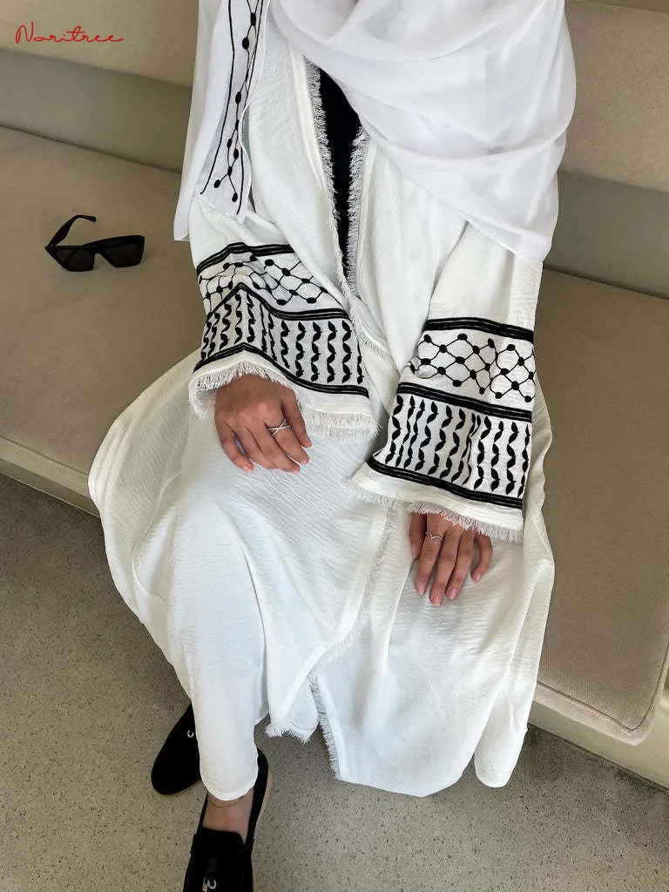
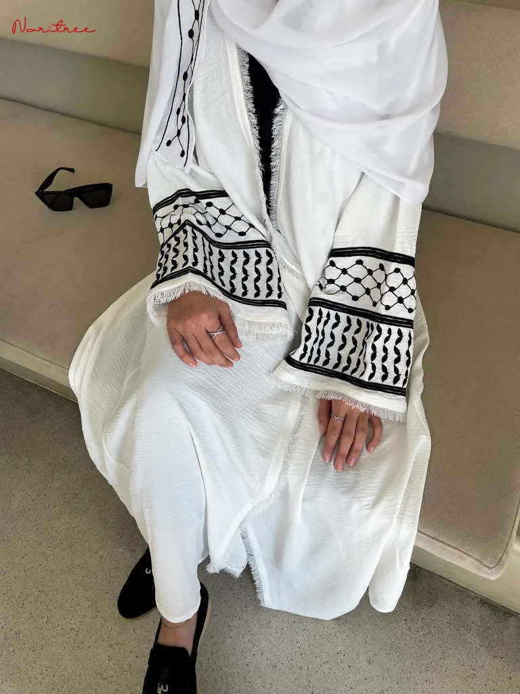

Instagram
 



/https://tf-cmsv2-smithsonianmag-media.s3.amazonaws.com/filer_public/55/95/55958815-3a8a-4032-ac7a-ff8c8ec8898a/gettyimages-1067956982.jpg)
wizard_bisan1

liked by nailglambys and others
wizard_bisan1 #keepEyesOnRafah, Ceasefire now.. we deserve life.
SunSet
liked by nailglambys and others
SunSet Sunsets paint the sky with a mesmerizing palette of colors, transforming the horizon
into a breathtaking
masterpiece.
CatArt
liked by nailglambys and others
CatArt Colorful cat art captures feline charm with bold hues and playful patterns,
celebrating their unique personalities and grace. These vibrant pieces highlight expressive features and
movements, bringing joy and energy to any space. Perfect for cat lovers and art enthusiasts, they add a
delightful touch to any decor.
nemahsis

liked by nailglambys and others
nemahsis some incredible stills by @amy.j.gardner on set for my music video “i wanna
be your right hand”
i only feel beautiful on camera when i‚Äôm captured in my elementü§ç
mua & stylist assist by @lil.sweeets3 üòÆ‚Äçüí®